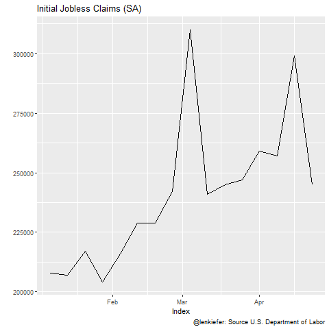
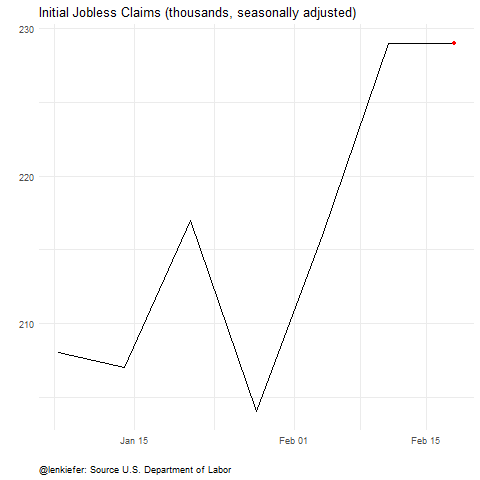

Earlier today I tweeted out a chart of the U.S. Labor Department’s estimate of initial jobless claims Link to pdf report.
weekly jobless claims, a 30σ event pic.twitter.com/LEO7s5TXsH
— 📈 𝙻𝚎𝚗 𝙺𝚒𝚎𝚏𝚎𝚛 📊 (@lenkiefer) March 26, 2020
Below I share R code to generate a chart like the one above.
We can get data from the St. Louis Fed’s Federal Reserve Economic Data (FRED).
Then it’s easy to make an animation.
In fact, we can fit it in a tweet if we were in a hurry. With so much volatility I find myself in a hurry often recently.
library(gganimate)
quantmod::getSymbols(Symbols="ICSA",src="FRED")
animate(forecast::autoplot(ICSA)+
transition_time(time(ICSA))+shadow_mark()+
view_follow()+
labs(y="",title="Initial Jobless Claims (SA)",
caption="@lenkiefer: Source U.S. Department of Labor"),end_pause=10)
If we were willing to take a little more time we could style it and add some additional features.
library(tidyverse)
df <- data.frame(date=time(ICSA),val=ICSA) %>%
# create a dummy date to stretch out the last frame
mutate(ind=ifelse(date==max(date),date+2500,date))
a <-
ggplot(data=df, aes(x=date,y=ICSA/1000))+geom_line()+
view_follow()+
geom_point(color="red")+
transition_reveal(ind)+
theme_minimal()+
theme(plot.caption=element_text(hjust=0))+
labs(x="",y="",title="Initial Jobless Claims (thousands, seasonally adjusted)",
caption="@lenkiefer: Source U.S. Department of Labor")
animate(a,end_pause=25, nframes=250)